elasticnet
Last updated: 2022-06-16
Checks: 7 0
Knit directory:
ampel-leipzig-meld/
This reproducible R Markdown analysis was created with workflowr (version 1.7.0). The Checks tab describes the reproducibility checks that were applied when the results were created. The Past versions tab lists the development history.
Great! Since the R Markdown file has been committed to the Git repository, you know the exact version of the code that produced these results.
Great job! The global environment was empty. Objects defined in the global environment can affect the analysis in your R Markdown file in unknown ways. For reproduciblity it’s best to always run the code in an empty environment.
The command set.seed(20210604) was run prior to running the code in the R Markdown file.
Setting a seed ensures that any results that rely on randomness, e.g.
subsampling or permutations, are reproducible.
Great job! Recording the operating system, R version, and package versions is critical for reproducibility.
Nice! There were no cached chunks for this analysis, so you can be confident that you successfully produced the results during this run.
Great job! Using relative paths to the files within your workflowr project makes it easier to run your code on other machines.
Great! You are using Git for version control. Tracking code development and connecting the code version to the results is critical for reproducibility.
The results in this page were generated with repository version 43a6574. See the Past versions tab to see a history of the changes made to the R Markdown and HTML files.
Note that you need to be careful to ensure that all relevant files for the
analysis have been committed to Git prior to generating the results (you can
use wflow_publish or wflow_git_commit). workflowr only
checks the R Markdown file, but you know if there are other scripts or data
files that it depends on. Below is the status of the Git repository when the
results were generated:
Ignored files:
Ignored: _targets/
Ignored: container/
Ignored: logs/
Untracked files:
Untracked: METHODS
Untracked: TODO
Untracked: analysis/bibliography/bibliography.bib.bak
Untracked: analysis/bibliography/bibliography.bib.sav.tmp
Untracked: scripts/R.sh
Untracked: scripts/env.sh
Unstaged changes:
Modified: code/05-ameld-elasticnet.R
Note that any generated files, e.g. HTML, png, CSS, etc., are not included in this status report because it is ok for generated content to have uncommitted changes.
These are the previous versions of the repository in which changes were made
to the R Markdown (analysis/elasticnet.Rmd) and HTML (docs/elasticnet.html)
files. If you’ve configured a remote Git repository (see
?wflow_git_remote), click on the hyperlinks in the table below to
view the files as they were in that past version.
| File | Version | Author | Date | Message |
|---|---|---|---|---|
| html | 8035219 | Sebastian Gibb | 2022-06-15 | chore: rebuild site |
| Rmd | 7ffaeb9 | Sebastian Gibb | 2022-06-15 | feat: add analysis of complete cases |
| html | d3e9462 | Sebastian Gibb | 2022-06-06 | chore: rebuild site |
| html | b20484a | Sebastian Gibb | 2022-06-06 | chore: rebuild site |
| Rmd | baac1e4 | Sebastian Gibb | 2022-06-06 | fix: bootstraping elastic net |
| html | 983ec69 | Sebastian Gibb | 2022-03-17 | chore: rebuild site |
| Rmd | 057f935 | Sebastian Gibb | 2022-03-17 | feat: add elastic net bootstrap and timeROC evaluations |
library("targets")
library("ameld")
library("viridisLite")
tar_load(arcvob)
tar_load(bootrcv)
tar_load(bootrcvcc)
tar_load(bootarcv)
tar_load(bootrcv.woIC)
tar_load(amelddata)
tar_load(amelddatacc)
tar_load(ameldcfg)
tar_load(zlog_data)
tar_load(zlog_data_complete_cases)1 Tuning alpha
arcvob
Call: arcv.glmnet(x = amelddata$x, y = amelddata$y, alpha = ameldcfg$alpha, nrepcv = ameldcfg$nrepcv, nfolds = ameldcfg$nfolds, balanced = TRUE, family = "cox", standardize = ameldcfg$standardize, trace.it = FALSE)
Models: 11
Alpha: 0 0.001 0.008 0.027 0.064 0.125 0.216 0.343 0.512 0.729 1
Number of CV for Lambda: 3
Number of repeated CV for Lambda: 10
Measure: Partial Likelihood Deviance
Lambda min:
Alpha Lambda Index Measure SE Nonzero
[1,] 0.000 0.99962 72 9.016 0.3485 42
[2,] 0.001 0.99962 72 9.016 0.3483 38
[3,] 0.008 0.88152 51 9.013 0.3492 26
[4,] 0.027 0.72678 40 9.014 0.3508 20
[5,] 0.064 0.48821 35 9.027 0.3555 18
[6,] 0.125 0.36265 31 9.046 0.3585 16
[7,] 0.216 0.25279 29 9.064 0.3620 12
[8,] 0.343 0.17471 28 9.079 0.3660 12
[9,] 0.512 0.12845 27 9.093 0.3685 9
[10,] 0.729 0.09022 27 9.104 0.3725 9
[11,] 1.000 0.05993 28 9.113 0.3772 10
Lambda 1se:
Alpha Lambda Index Measure SE Nonzero
[1,] 0.000 4.8608 55 9.340 0.3201 42
[2,] 0.001 4.8608 55 9.353 0.3189 32
[3,] 0.008 3.9057 35 9.329 0.3185 23
[4,] 0.027 2.9340 25 9.361 0.3135 17
[5,] 0.064 1.9709 20 9.369 0.3123 12
[6,] 0.125 1.3340 17 9.399 0.3108 10
[7,] 0.216 0.8472 16 9.380 0.3131 8
[8,] 0.343 0.5856 15 9.403 0.3103 6
[9,] 0.512 0.4305 14 9.454 0.3054 6
[10,] 0.729 0.3024 14 9.444 0.3089 6
[11,] 1.000 0.2204 14 9.441 0.3105 6plot(arcvob)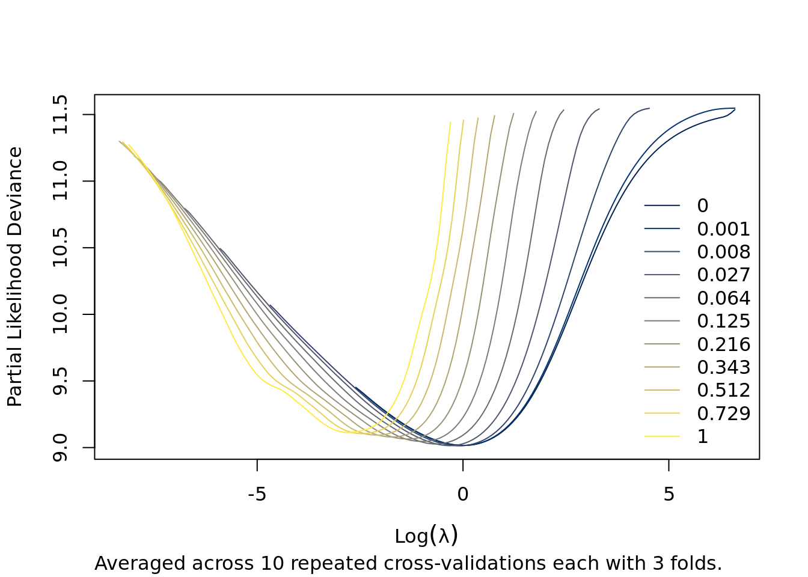
plot(arcvob, what = "lambda.min")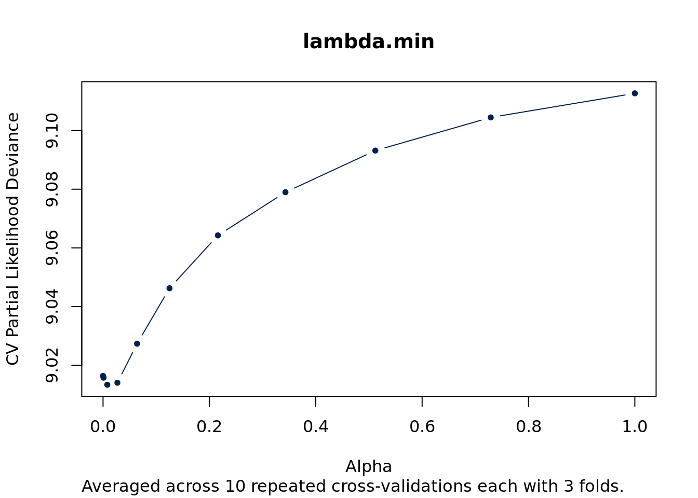
plot(arcvob, what = "lambda.1se")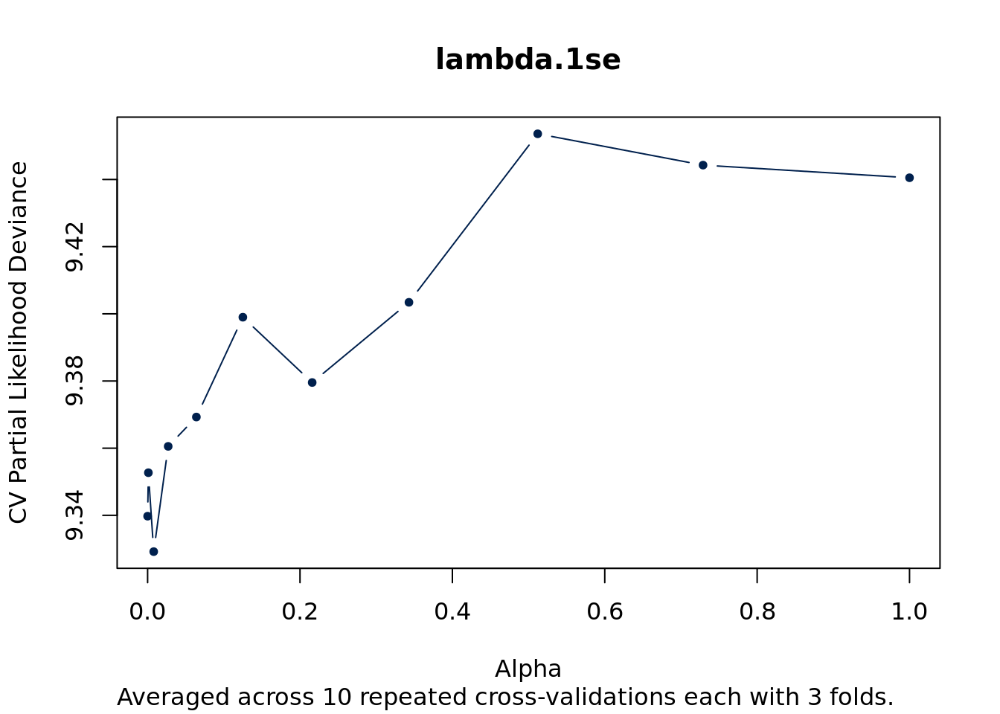
2 Bootstrapping
2.1 rcv.glmnet
plot(bootrcv, what = "calibration")
ps <- lapply(
zlog_data[paste0("SurvProbMeld", c("Unos", "NaUnos", "Plus7"))],
function(p) {
ctpnts <- cutpoints(p, n = ameldcfg$m)
f <- cut(p, ctpnts, include.lowest = TRUE)
list(
predicted = groupmean(p, f = f),
observed = observed_survival(
amelddata$y, f = f, times = ameldcfg$times
)
)
}
)
names(ps) <- c("MELD", "MELD-Na", "MELD-Plus7")
col <- viridisLite::viridis(6)[4:6]
for (i in seq_along(ps)) {
lines(
ps[[i]]$predicted, ps[[i]]$observed, col = col[i], type = "b", pch = 19
)
}
legend("topleft", col = col, legend = names(ps), pch = 19, bty = "n")
plot(bootrcv, what = "selected", cex = 0.5)
plot(bootrcv$fit$glmnet.fit, xvar = "norm")
plot(bootrcv$fit$glmnet.fit, xvar = "lambda")
plot(bootrcv$fit$glmnet.fit, xvar = "dev")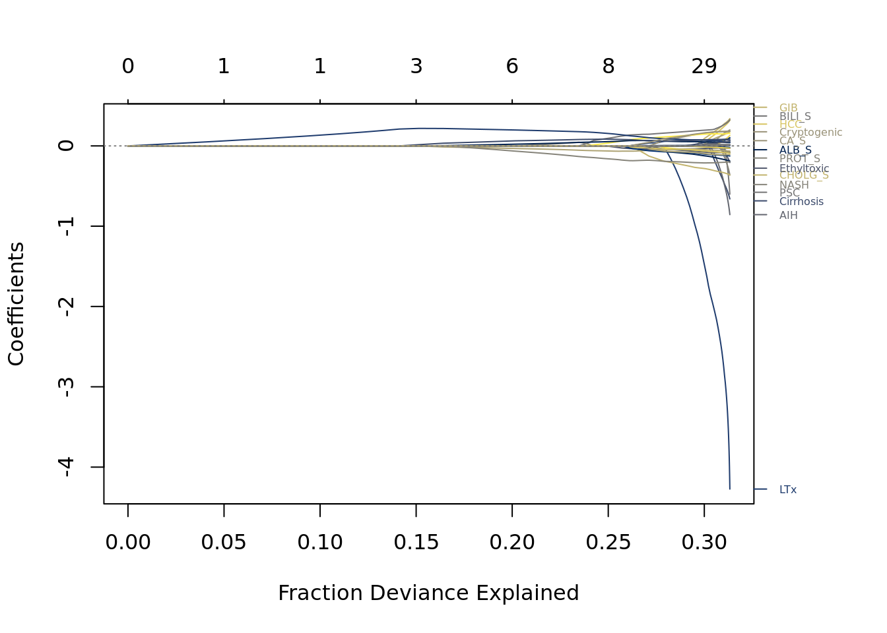
2.2 rcv.glmnet (complete cases only)
plot(bootrcvcc, what = "calibration")
ps <- lapply(
zlog_data_complete_cases[paste0("SurvProbMeld", c("Unos", "NaUnos", "Plus7"))],
function(p) {
ctpnts <- cutpoints(p, n = ameldcfg$m)
f <- cut(p, ctpnts, include.lowest = TRUE)
list(
predicted = groupmean(p, f = f),
observed = observed_survival(
amelddatacc$y, f = f, times = ameldcfg$times
)
)
}
)
names(ps) <- c("MELD", "MELD-Na", "MELD-Plus7")
col <- viridisLite::viridis(6)[4:6]
for (i in seq_along(ps)) {
lines(
ps[[i]]$predicted, ps[[i]]$observed, col = col[i], type = "b", pch = 19
)
}
legend("topleft", col = col, legend = names(ps), pch = 19, bty = "n")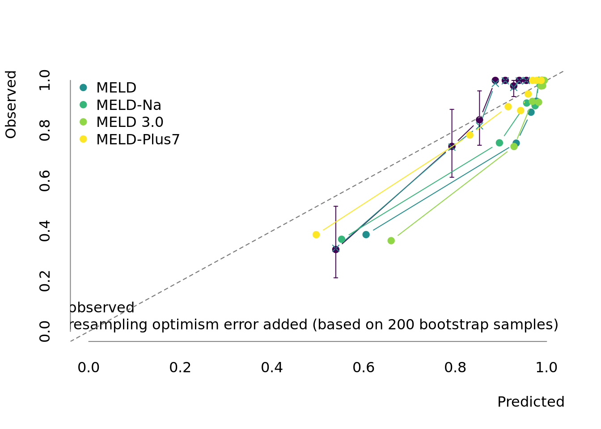
| Version | Author | Date |
|---|---|---|
| 8035219 | Sebastian Gibb | 2022-06-15 |
plot(bootrcvcc, what = "selected", cex = 0.5)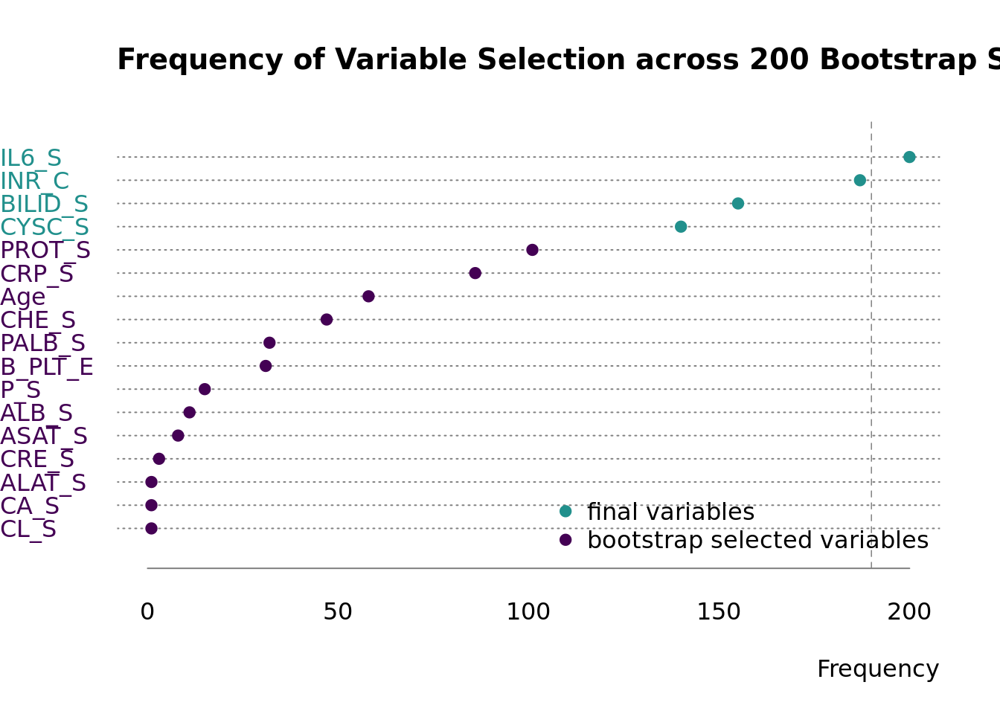
| Version | Author | Date |
|---|---|---|
| 8035219 | Sebastian Gibb | 2022-06-15 |
plot(bootrcvcc$fit$glmnet.fit, xvar = "norm")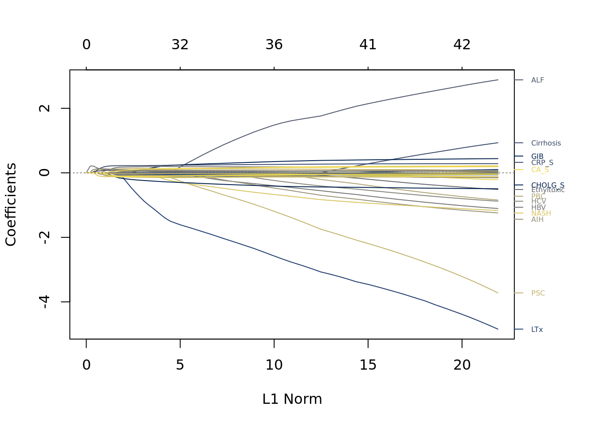
| Version | Author | Date |
|---|---|---|
| 8035219 | Sebastian Gibb | 2022-06-15 |
plot(bootrcvcc$fit$glmnet.fit, xvar = "lambda")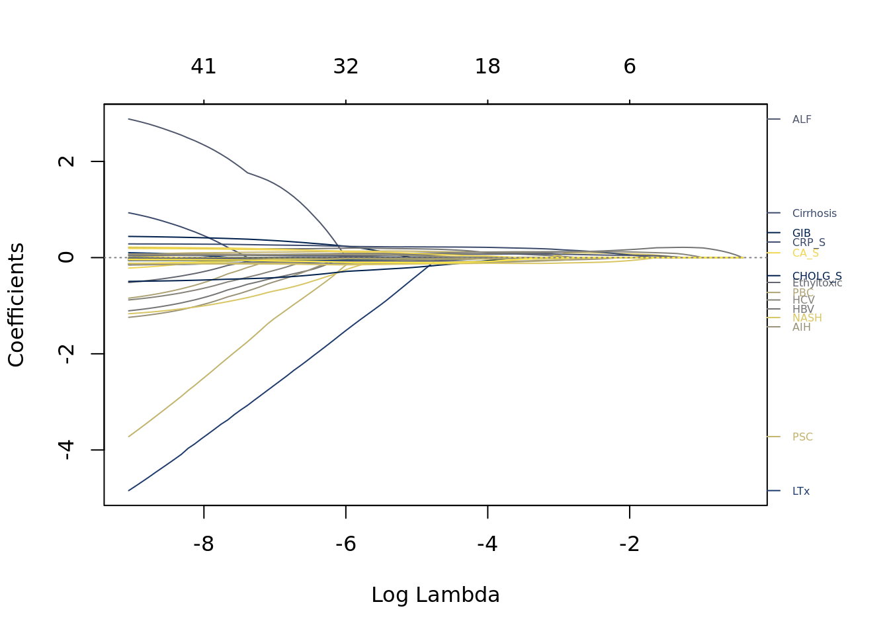
| Version | Author | Date |
|---|---|---|
| 8035219 | Sebastian Gibb | 2022-06-15 |
plot(bootrcvcc$fit$glmnet.fit, xvar = "dev")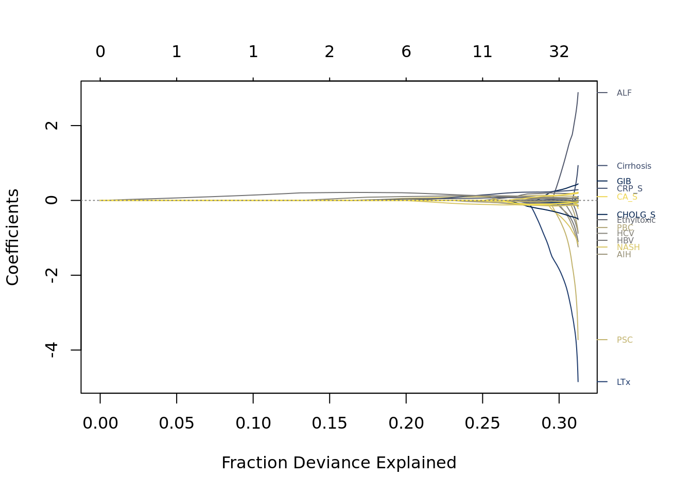
| Version | Author | Date |
|---|---|---|
| 8035219 | Sebastian Gibb | 2022-06-15 |
2.3 bootrcv.woIC
Exclude IL-6 and CYSC columns from the data set.
plot(bootrcv.woIC, what = "calibration")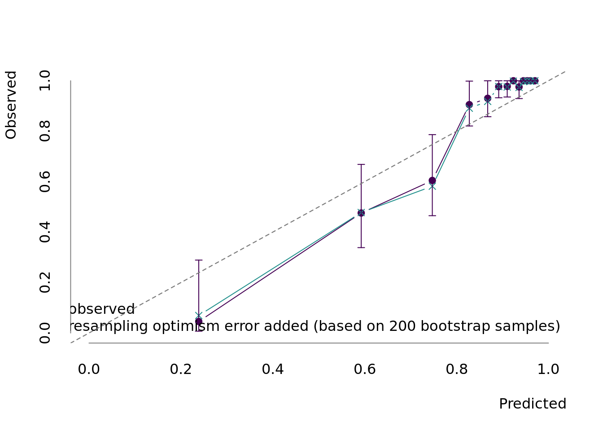
| Version | Author | Date |
|---|---|---|
| 8035219 | Sebastian Gibb | 2022-06-15 |
plot(bootrcv.woIC, what = "selected", cex = 0.5)
| Version | Author | Date |
|---|---|---|
| 8035219 | Sebastian Gibb | 2022-06-15 |
2.4 arcv.glmnet
a <- c(table(sapply(bootarcv$models, function(m)m$fit$alpha)))
plot(bootarcv, what = "calibration")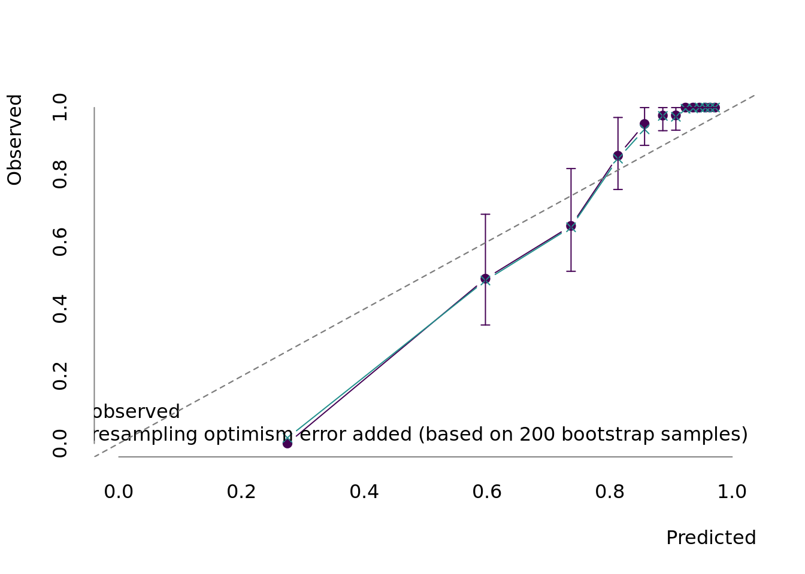
plot(bootarcv, what = "selected")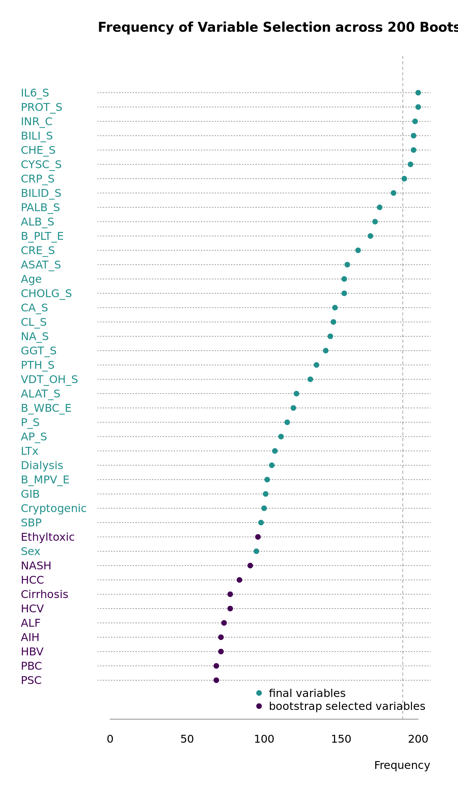
plot_dots(a, main = "Selected Alpha Values")
sessionInfo()R version 4.2.0 (2022-04-22)
Platform: x86_64-unknown-linux-gnu (64-bit)
Matrix products: default
BLAS/LAPACK: /gnu/store/ras6dprsw3wm3swk23jjp8ww5dwxj333-openblas-0.3.18/lib/libopenblasp-r0.3.18.so
locale:
[1] LC_CTYPE=en_US.UTF-8 LC_NUMERIC=C
[3] LC_TIME=en_US.UTF-8 LC_COLLATE=en_US.UTF-8
[5] LC_MONETARY=en_US.UTF-8 LC_MESSAGES=en_US.UTF-8
[7] LC_PAPER=en_US.UTF-8 LC_NAME=C
[9] LC_ADDRESS=C LC_TELEPHONE=C
[11] LC_MEASUREMENT=en_US.UTF-8 LC_IDENTIFICATION=C
attached base packages:
[1] stats graphics grDevices utils datasets methods base
other attached packages:
[1] viridisLite_0.4.0 ameld_0.0.24 survival_3.3-1 glmnet_4.1-4
[5] Matrix_1.4-1 targets_0.12.1
loaded via a namespace (and not attached):
[1] shape_1.4.6 tidyselect_1.1.2 xfun_0.31 bslib_0.3.1
[5] purrr_0.3.4 splines_4.2.0 lattice_0.20-45 vctrs_0.4.1
[9] htmltools_0.5.2 yaml_2.3.5 utf8_1.2.2 rlang_1.0.2
[13] jquerylib_0.1.4 later_1.3.0 pillar_1.7.0 glue_1.6.2
[17] withr_2.5.0 foreach_1.5.2 lifecycle_1.0.1 stringr_1.4.0
[21] workflowr_1.7.0 codetools_0.2-18 evaluate_0.15 knitr_1.39
[25] callr_3.7.0 fastmap_1.1.0 httpuv_1.6.5 ps_1.7.0
[29] fansi_1.0.3 highr_0.9 Rcpp_1.0.8.3 promises_1.2.0.1
[33] backports_1.4.1 jsonlite_1.8.0 fs_1.5.2 digest_0.6.29
[37] stringi_1.7.6 bookdown_0.26 processx_3.5.3 rprojroot_2.0.3
[41] grid_4.2.0 cli_3.3.0 tools_4.2.0 magrittr_2.0.3
[45] base64url_1.4 sass_0.4.1 tibble_3.1.7 crayon_1.5.1
[49] whisker_0.4 pkgconfig_2.0.3 ellipsis_0.3.2 data.table_1.14.2
[53] rmarkdown_2.14 iterators_1.0.14 R6_2.5.1 igraph_1.3.1
[57] git2r_0.30.1 compiler_4.2.0